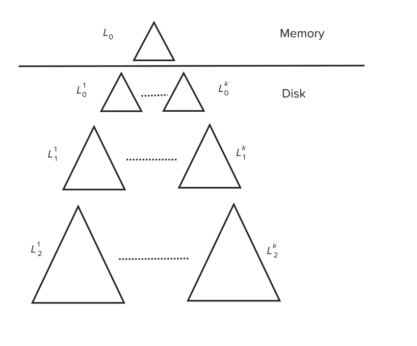
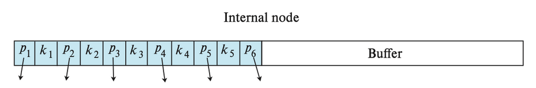
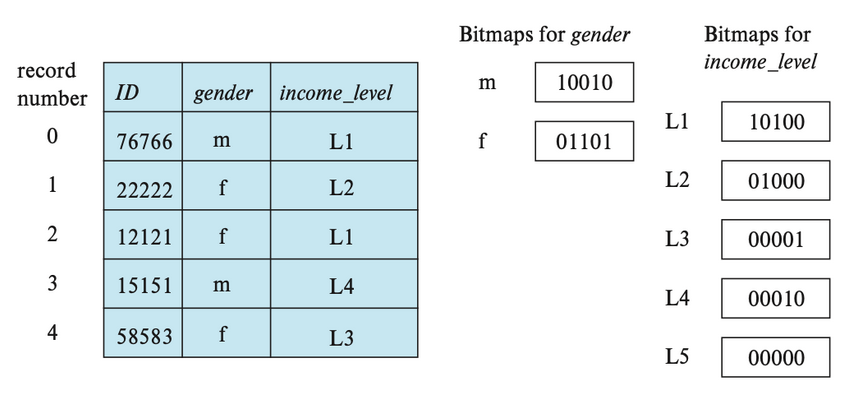

Chap 10: Indexing
约 2495 个字 3 行代码 22 张图片 预计阅读时间 25 分钟
Basic Concepts
Indexing mechanisms used to speed up access to desired data.
索引用来加速查找。
Search Key - attribute to set of attributes used to look up records in a file.
An index file consists of records (called index entries) of the form.
索引文件通常是有顺序的
Index Evaluation Metrics
- Access types supported efficiently
- Point query: records with a specified value in the attribute.
点查询 - Range query: records with an attribute value falling in a specified range of values.
范围查询
- Point query: records with a specified value in the attribute.
- Access time
- Insertion time
- Deletion time
- Space overhead
Ordered Indices
- Primary index（主索引）: in a sequentially ordered file, the index whose search key specifies the sequential order of the file.
- Also called clustering index（聚集索引）
- The search key of a primary index is usually but not necessarily the primary key.
- Secondary index（辅助索引）: an index whose search key specifies an order different from the sequential order of the file. Also called non-clustering index.
Example

主索引和数据内的顺序是一样的。点查和范围查都是比较高效的。

如果 key 不是一个主键，那可能会对应多个记录。
Primary index 是很宝贵的，只能有一个，其他都是辅助索引。
- Dense index( 稠密索引 ) — Index record appears for every search-key value in the file.
所有 search-key 都要出现在索引文件里。 - Sparse Index（稀疏索引）: contains index records for only some search-key values.
Example


Good tradeoff: sparse index with an index entry for every block in file, corresponding to least search-key value in the block.

Multilevel Index
If primary index does not fit in memory, access becomes expensive.
可以对索引文件本身再建立一次索引。
B+ Tree Index
- All paths from root to leaf are of the same length
- Inner node(not a root or a leaf): between \(\lceil n/2\rceil\) and \(n\) children.
- Leaf node: between \(\lceil (n–1)/2\rceil\) and \(n–1\) values
- Special cases:
- If the root is not a leaf:
at least 2 children. - If the root is a leaf :
between 0 and (n–1)values.
- If the root is not a leaf:
一般一个节点就是一个块的大小 , 4K.
B+ 树的叉是非常大的。

Observations about B+ Trees
Since the inter-node connections are done by pointers, “logically” close blocks need not be “physically” close. 如果有很多文件一次性建立 B+ 树，我们可以从叶子节点开始建立。
如果有 K 个索引项，则树高度不会超过 \(\lceil \log_{\lceil n/2 \rceil}(K/2)\rceil + 1\).
高度最小为 \(\log_n(K)\)
Examples of Insert on B+ Tree


注意内点的 split 和叶子的不一样。要把中间的节点 move 上去。
Examples of Delete on B+ Tree

中间点如果不够，从另外一边借一个过来。但是不能直接借，需要把它顶上去。


注意考虑和兄弟合并。
B+- tree : height and size estimation


全满的时候节点最少
注意这里的向上/向下取整问题
浅层节点个数少，我们可以把第一层和第二层的节点都放到内存中 pin 住。
B+ Tree File Organization
文件组织
B+ Tree File Organization:
- Leaf nodes in a B+ Tree file organization store records, instead of pointers
叶子节点不再放索引项，放记录本身。 - Helps keep data records clustered even when there are insertions/deletions/updates

我们可以改变半满的要求以提高空间利用率。
Other Issues in Indexing
- Record relocation and secondary indices
If a record moves, all secondary indices that store record pointers have to be updated
Node splits in B+ Tree file organizations become very expensive
Solution: use primary-index search key instead of record pointer in secondary index - Variable length strings as keys
Variable fanout - Prefix compression
Key values at internal nodes can be prefixes of full key
Keep enough characters to distinguish entries in the subtrees separated by the key value
Multiple-Key Access
Composite search keys are search keys containing more than one attribute
e.g. (dept_name, salary)
Lexicographic ordering: \((a_1, a_2) < (b_1, b_2)\) if either \(a_1 < b_1\), or \(a_1=b_1\) and \(a_2 < b_2\).
单个 key, 不同 key 之间组合都可以建立 B+ 树。这样会有很多组合，可以在频繁出现的查询属性上建立 B+ 树。
Non-unique Search Keys
我们可以在 B+ 树叶子节点不直接指向磁盘里的数据，而是指向一个块。
也可以在索引上加上去一个索引，使它对应的记录唯一。
可以通过范围查找
Bulk Loading and Bottom-Up Build
Inserting entries one-at-a-time into a B+ Tree requires \(\geq 1\) IO per entry
如果我们一次性插入很多索引项
- Efficient alternative 1: Insert in sorted order
局部性较好，减少 I/O. - Efficient alternative 2: Bottom-up B+ Tree construction
- First sort index entries
- Then create B+ Tree layer-by-layer, starting with leaf level
- The built B+ Tree is written to disk using sequential I/O operations
Example

如果要排序的内容较大，无法放下内存，可以使用外部排序。
fanout 可以计算出来。
可以用 level-order 写到磁盘里，便于顺序访问所有索引，此时块是连续的。（便于顺序访问所有数据项）
这里的代价就是建好后，一次 seek 后全部写出去 (9 blocks)
Bulk insert index entries
Example

把刚刚那棵 B+ 树叶子节点（即遍历所有数据）需要 1seek+6blocks. 随后和上面的数据合并后，写回磁盘时需要 1seek+13blocks.
Merge two existing two B+ Trees , to create a new B+ Tree using the Bottom-UP Build algorithm, as in LSM-tree Index
假设有两棵这样生成的 B+ 树，将他们合并在一起。首先把叶子节点拿出来排序。
Indexing in Main Memory

cache 按 cache line 传输 , 只有 64B.
- Random access in memory
- Much cheaper than on disk/flash, but still expensive compared to cache read
- Binary search for a key value within a large B+ Tree node results in many cache misses
二分查找可能带来很多 cache miss. - Data structures that make best use of cache preferable – cache conscious
B+- trees with small nodes that fit in cache line are preferable to reduce cache misses
并且由于顺着树往下查时只需要用到 search key，所以 search key 和 pointer 在 node 中可以分开放。
Key idea:
- use large node size to optimize disk access,
- but structure data within a node using a tree with small node size, instead of using an array, to optimize cache access.

Indexing on Flash
Flash 里不是即时修改，而是先擦掉再写。同时擦的次数是有限制的。因此最好的方法是从底构建，然后顺序写入。
- Random I/O cost much lower on flash
20 to 100 microseconds for read/write - Writes are not in-place, and (eventually) require a more expensive erase Optimum page size therefore much smaller
- Bulk-loading still useful since it minimizes page erases
- Write-optimized tree structures (i.e., LSM-tree, buffer tree) have been adapted to minimize page writes for flash-optimized search trees
下面介绍一些写优化索引结构
Log Structured Merge (LSM) Tree

- Records inserted first into in-memory tree (\(L_0\) tree)
- When in-memory tree is full, records moved to disk (\(L_1\) tree)
B+ Tree constructed using bottom-up build by merging existing \(L_1\) tree with records from \(L_0\) tree
内存里的 B+ 树如果满了，就马上写到磁盘里去（可以连续写） - When \(L_1\) tree exceeds some threshold, merge into \(L_2\) tree
And so on for more levels
Size threshold for \(L_{i+1}\) tree is \(k\) times size threshold for \(L_i\) tree
这样我们把随机写变为了顺序写。但此时查找一个索引，就要遍历所有 B+ 树。
- Benefits of LSM approach
- Inserts are done using only sequential I/O operations
- Leaves are full, avoiding space wastage
- Reduced number of I/O operations per record inserted as compared to normal B+ Tree (up to some size)
- Drawback of LSM approach
- Queries have to search multiple trees
- Entire content of each level copied multiple times
Stepped Merge Index
原先的结构中，Merge 操作太多，我们可以一次性合并。
磁盘上每层有 k 棵树，当 k 个索引处于同一层时，合并它们并得到一棵层数 \(+1\) 的树，写回。
\(L_1\) 有大小限制，达到后会生成另一个 B+ 树，依次为 k 倍。

- Reduces write cost compared to LSM tree
- But queries are even more expensive since many trees need to be queries
Optimization for point lookups - Compute Bloom filter for each tree and store in-memory - Query a tree only if Bloom filter returns a positive result
Bloom filter
布隆过滤器 (Bloom filter) 是一种空间效率极高的 概率型数据结构，用于快速判断某个元素是否 可能存在于集合中，或 肯定不存在于集合中。在数据库中常用于加速查询，减少不必要的磁盘访问。
-
核心思想
- 位数组 + 哈希函数：
- 初始化一个长度为 m 的二进制位数组（全 0
） 。 - 使用 k 个哈希函数将元素映射到位数组的 k 个位置。
- 初始化一个长度为 m 的二进制位数组（全 0
- 插入元素：将元素哈希后的 k 个位置置 1。
- 查询元素：检查元素哈希后的 k 个位置是否全为 1：
- 若全为 1，元素 可能存在（可能误判
） ； - 若有任一位置为 0，元素 一定不存在。
- 若全为 1，元素 可能存在（可能误判
- 位数组 + 哈希函数：
-
在数据库中的应用
- LSM 树查询优化：
- 每个 SSTable 关联一个布隆过滤器。
- 查询时先检查布隆过滤器，若返回“不存在”，直接跳过该文件，避免无效磁盘 I/O。
- LSM 树查询优化：
LSM 的删除和更新如下
- Deletion handled by adding special “delete” entries
- Lookups will find both original entry and the delete entry, and must return only those entries that do not have matching delete entry
- When trees are merged, if we find a delete entry matching an original entry, both are dropped.
- Update handled using insert+delete
- LSM trees were introduced for disk-based indices
- But useful to minimize erases with flash-based indices
- The stepped-merge variant of LSM trees is used in many BigData storage systems
- Google BigTable, Apache Cassandra, MongoDB
- And more recently in SQLite4, LevelDB, and MyRocks storage engine of MySQL
Buffer tree
sjl 上课没讲过，但是说上次期末考了这个东西，让我们自学

- Key idea: each internal node of B+ tree has a buffer to store inserts
- Inserts are moved to lower levels when buffer is full
- With a large buffer, many records are moved to lower level each time
- Per record I/O decreases correspondingly
- Benefits
- Less overhead on queries
- Can be used with any tree index structure
- Used in PostgreSQL Generalized Search Tree (GiST) indices
- Drawback: more random I/O than LSM tree
简要来说就是每插入一条记录，不会遍历节点到叶子节点中插入，而是直接插入在根节点的缓冲区中，直到缓冲区满再逐级向下搬
总体而言，读操作相比 LSM 树更快，写操作相比 LSM 树更慢。
Bitmap indices
这里上课也没讲过，但是小测和 ppt 中都有涉及
- Bitmap indices are a special type of index designed for efficient querying on multiple keys
- Applicable on attributes that take on a relatively small number of distinct values
- E.g., gender, country, state, …
- E.g., income-level (income broken up into a small number of levels such as 0-9999, 10000-19999, 20000-50000, 50000- infinity)
- A bitmap is simply an array of bits
位图索引 (bitmap indices) 是一类适用于对多个键做简单查询的索引。在使用位图索引前，需要为关系中的每条记录标号（从 0 开始
位图 (bitmap) 就是一组位，对于关系 \(r\) 的属性 \(A\)，位图索引包含了 \(A\) 可取的每个值，而位的数量对应记录的数量。对于某个值 \(v_j\) 的位图，如果编号为 \(i\) 的记录的属性值为 \(v_j\)，那么该位图的第 \(i\) 位置 1，否则置 0。
下面就是一个位图索引的例子：

对于以下查询：
我们找到 gender 属性值为 f，以及 income_levelincome_level 属性值为 L2 的位图，然后对这两个位图进行交 (intersection) 运算（实际上是一个逻辑与的运算